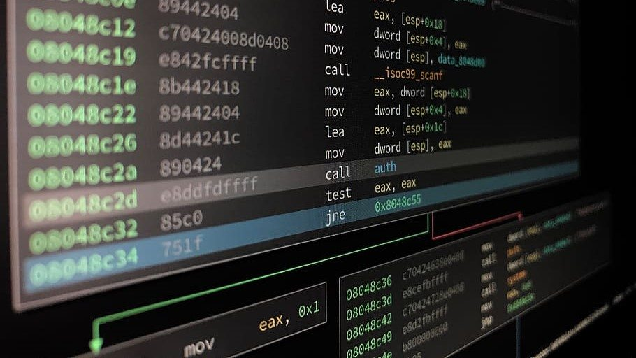
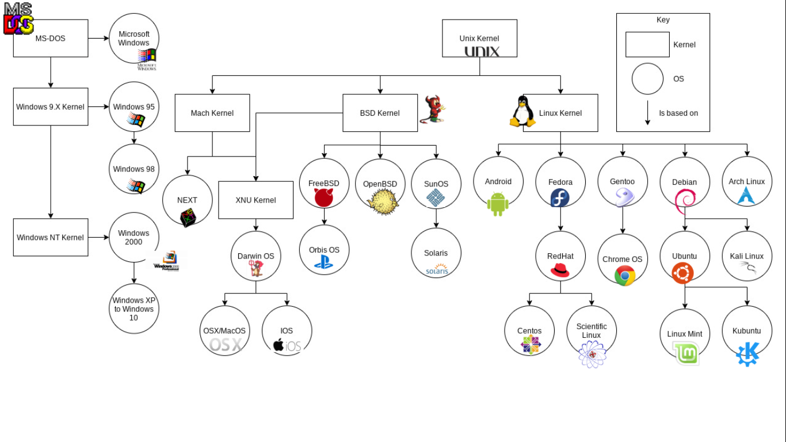
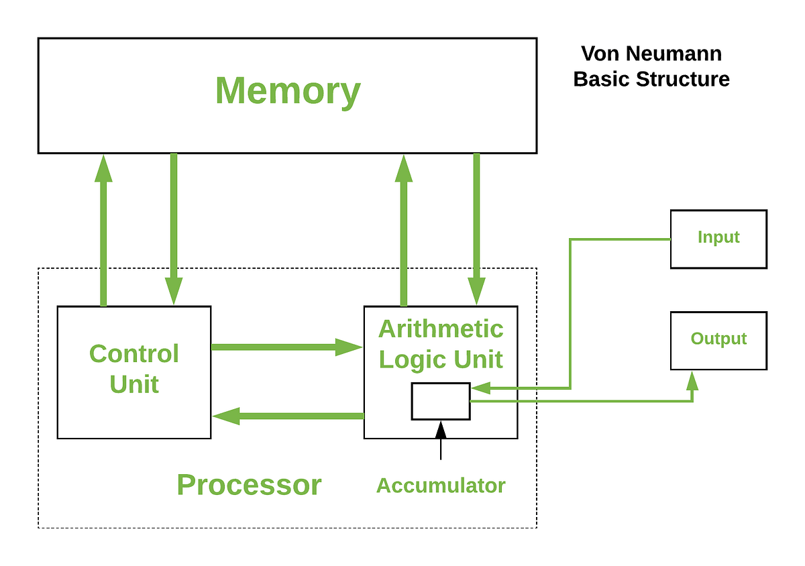
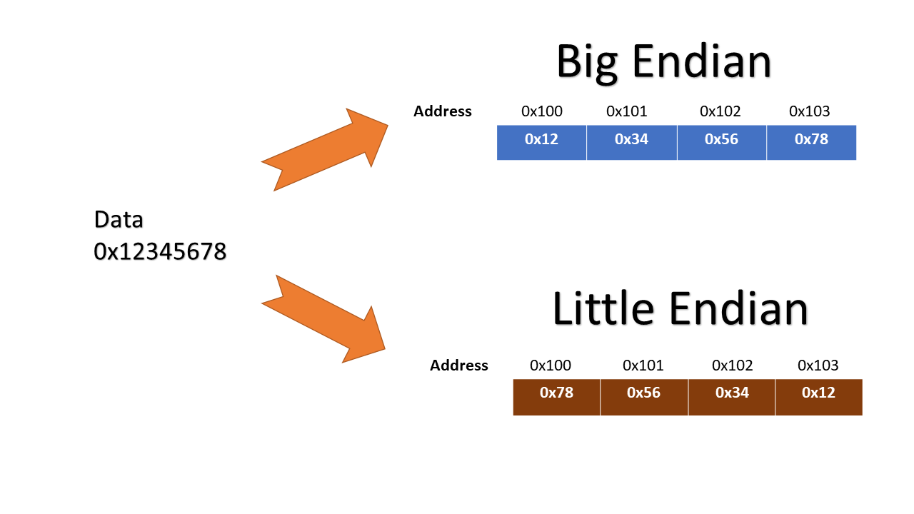
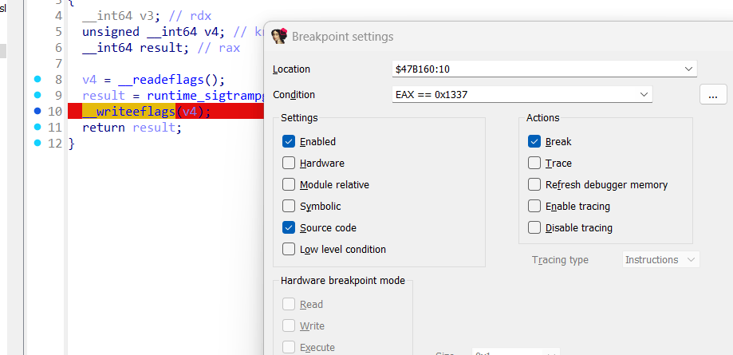

-
Reverse engineering phần mềm là quá trình phân tích mã nguồn của một
phần mềm để tìm hiểu về cấu trúc, chức năng và cách hoạt động của nó.
Điều này có thể được thực hiện để:
-
Tìm hiểu về cách hoạt động của một phần mềm: Điều này có thể hữu ích
cho các nhà phát triển phần mềm, những người muốn sửa lỗi hoặc cải
thiện phần mềm.
-
Sao chép hoặc sản xuất một phần mềm tương tự: Điều này có thể được
thực hiện để tiết kiệm chi phí hoặc để tạo ra một phiên bản cải tiến
của phần mềm. Tuy nhiên, việc sao chép phần mềm có bản quyền mà không
có sự cho phép của tác giả là bất hợp pháp.
-
Phân tích bảo mật của một phần mềm: Điều này có thể giúp xác định các
lỗ hổng bảo mật có thể bị khai thác bởi tin tặc.
Khái niệm reverse engineering cũng tồn tại trong mảng phần cứng, với ý
nghĩa tương tự là phân tích và tái tạo lại phần cứng đó. Tuy nhiên chúng
ta sẽ chỉ nói về dịch ngược phần mềm trong bài viết này.
Trước khi tìm hiểu về
reverse engineering, bạn đọc cần có hiểu biết về kiến trúc máy tính và
assembly, nên tìm hiểu về tập lệnh x86 (định dạng Intel) vì tập lệnh và
định dạng này phổ biến.
Operating System

-
Phía trên là cây hệ điều hành mô tả các nhánh phát triển từ cốt lõi
của các hệ điều hành ngày nay. Mọi hệ điều hành đều chứa kernel (nhân
hệ điều hành). Kernel thực hiện các chức năng quan trọng như:
-
Quản lí tiến trình: tạo process, lập lịch tiến trình (cái nào chạy
trước ?), đồng bộ hoá tránh race condition (mutex,
critical-section,semaphores,...), deadlock, giao tiếp giữa các tiến
trình (IPC - Inter-Process Communication).
- Quản lí bộ nhớ: cấp phát bộ nhớ, phân trang,...
- Quản lí hệ thống file
- Quản lí thiết bị (ổ cứng, máy in, bàn phím,...)
- Quản lí mạng: giao thức, quản lí gói tin,...
- ...
Các thành phần bên trên (user mode) sử dụng syscall (lời gọi hệ thống)
để giao tiếp với kernel. Từ syscall được gọi, kernel sẽ làm việc với
CPU, RAM, ổ cứng,... để đạt được mục tiêu của syscall (kernel mode).
Instruction Set Architecture
-
Các CPU hiện nay trên thị trường được gắn với một kiến trúc tập lệnh
nào đó. Kiến trúc tập lệnh (Instruction Set Architecture) là tập hợp
các kỹ thuật thiết kế bộ vi xử lý được sử dụng để thực hiện các tập
lệnh. Máy vi tính với CPU khác nhau có thể chia sẻ một tập lệnh phổ
biến. Một số kiến trúc tập lệnh phổ biến:
-
x86: Kiến trúc x86 là kiến trúc tập lệnh phổ biến nhất hiện nay, được
sử dụng trong hầu hết các máy tính để bàn, máy tính xách tay, máy chủ
và các thiết bị nhúng. Kiến trúc x86 đã trải qua nhiều lần cập nhật và
mở rộng trong những năm qua, và hiện được hỗ trợ bởi một loạt các nhà
sản xuất bộ xử lý, bao gồm Intel, AMD và VIA. Có 2 định dạng phổ biến
của x86 là Intel và AT&T, 2 cách đọc này khác nhau đôi chút.
-
ARM: Kiến trúc ARM là kiến trúc tập lệnh phổ biến nhất trong các thiết
bị di động, bao gồm điện thoại thông minh, máy tính bảng và máy tính
xách tay. Kiến trúc ARM được thiết kế để tiết kiệm điện năng và hiệu
suất trên mỗi watt, khiến nó trở nên lý tưởng cho các thiết bị di
động.
-
MIPS: Kiến trúc MIPS là kiến trúc tập lệnh phổ biến trong một số thiết
bị, bao gồm máy tính để bàn, máy tính xách tay, máy chủ và các thiết
bị nhúng. Kiến trúc MIPS được thiết kế để đơn giản và hiệu quả, khiến
nó trở nên lý tưởng cho các ứng dụng đòi hỏi tài nguyên thấp.
-
PowerPC: Kiến trúc PowerPC là kiến trúc tập lệnh phổ biến trong các
máy chủ và thiết bị nhúng. Kiến trúc PowerPC được thiết kế để hiệu
suất cao, khiến nó trở nên lý tưởng cho các ứng dụng đòi hỏi nhiều tài
nguyên.
-
RISC-V: Kiến trúc RISC-V là một kiến trúc tập lệnh mới đang trở nên
phổ biến. Kiến trúc RISC-V là kiến trúc tập lệnh mở, miễn phí, khiến
nó trở nên lý tưởng cho các ứng dụng yêu cầu chi phí thấp và linh
hoạt.
Hầu hết mọi thứ chạy trên máy tính đều được có thể biểu diễn dưới tập
lệnh ISA. Chúng ta có thể nhét một file thực thi bất kì vô disassembler
để lấy tập lệnh ISA file đó thực thi.
x86 Architecture
Kiến trúc x86 tuân theo mô hình máy tính Von Neumann. Mà theo đó, máy
tính là sự kết hợp các các thành phần: ALU, khối điều khiển Von Neumann
control unit, input/output, và một bộ nhớ có thể chứa cả lệnh và dữ
liệu. Các lệnh được thực hiện một cách tuần tự, mỗi thời điểm chỉ thực
hiện được một lệnh.

Memory layout
Về memory layout, bạn đọc có thể đọc tại:
Viblo. Trong đó có thể thấy các section trong file thực thi được chuyển
thành segment khi đi vào bộ nhớ. Bạn đọc cần chú ý phần stack, stack
frame, thứ tự & cấu trúc bên trong mỗi frame, và cũng có thể thử sức
với các bài CTF pwn căn bản về buffer overflow để hiểu rõ hơn về stack.
Endianess
Endianess là cách mà các byte được sắp xếp trong bộ nhớ. Có 2 loại
endianess phổ biến: Big-endian và Little-endian. Trong Big-endian, byte
cao nhất được lưu trước byte thấp nhất, trong khi trong Little-endian,
byte thấp nhất được lưu trước byte cao nhất. Trong x86, dữ liệu được lưu
theo Little-endian.

Để dễ nhớ, mình thường nhớ little endian đọc từ địa chỉ cao xuống thấp
và ngược lại.
Registers Overview
EAX - stores function return values
EBX - base pointer to
the data section
ECX - counter for string and loop operations
EDX - I/O pointer
ESI - source pointer for string operations
EDI - destination pointer for string operations
ESP - stack
pointer
EBP - stack frame base pointer
EIP - pointer to next
instruction to execute - “instruction pointer”
How a Program Works?
Thông thường, một chương trình có thể được tạo ra bằng 2 cách: Compiling
và Interpreting.
Compiling
Sau quá trình compile source thì còn có 2 bước nữa để chương trình có
thể thực thi được là: linker & loader.

Sau khi compile, chúng ta sẽ nhận được file object (.o) chứa mã máy và
thông tin cơ bản về các thư viện (file .h) như là tên các hàm, các kiểu
sử dụng. Từ đó có thể kiểm tra lỗi cú pháp (syntax) trong source code.
Sau đó, tại bước linker, nếu là static linking, thông tin về các hàm từ
thư viện sẽ được thêm vào chương trình (file .lib, .a sẽ chứa mã thực
thi thư viện). Nếu là dynamic linking, linker chỉ tạo ra các thông tin
về các hàm cần được nạp từ .dll trong lúc chạy, và không copy mã thực
thi vào chương trình. Cuối cùng, khi chương trình được khởi chạy, loader
sẽ nạp output của linker (file .exe) vào bộ nhớ và thực thi chương
trình, nếu có thư viện .dll, loader sẽ nạp .dll vào bộ nhớ và thực thi
các hàm trong đó.
Interpreting
Đối với các chương trình sử dung thông dịch, quy trình sẽ khác với
compiling. Ví dụ, đối với python, bước đầu khi chạy 1 file source code
.py, trình thông dịch Python sẽ compile file .py thành dạng bytecode
(.pyc). Sau đó, ở bước tiếp theo, PVM (Python Virtual Machine) sẽ
interprete bytecode và thực thi chương trình.
Ở Python, có 2 cách để import một thư viện.
Cách 1 là sử dụng từ khoá import (Ex: "import math"), thông tin sơ
lược về thư viện sẽ được thêm ở bước compile thành .pyc. Sau đó khi
thông dịch bytecode, thông tin chi tiết sẽ được đẩy vào memory của
chương trình (giống như ở Compiling nhưng bỏ bước linker, loader sẽ làm
luôn công việc của linker).
Cách 2 là import động (Dynamic
Loading). Khi đó trong lúc thực thi chương trình (loader), nếu cần sử
dụng thư viện nào thì lúc đó mới thêm vào thay vì phải cho biết trước
như cách 1. Để dùng cách 2 này, chúng ta có thể dùng hàm __import__ hay
module importlib.
DLL in compiled programs
Sau khi xem nội dung trên, các bạn có thể thấy Compiling đang thiếu hụt
hướng chạy thư viện cùng lúc với program giống như cả 2 cách của
Interpreting. DLL có thể giúp khắc phục điều này. DLL (Dynamic Link
Library) cũng có 2 cách tương ứng 2 cách của Interpreting, đó là:
Load-time dynamic linking (giống C1) và Runtime dynamic linking (giống
C2).
Nếu dùng Load-time dynamic linking, khi compile source code chúng
ta phải đính kèm file thư viện. Còn nếu dùng Runtime dynamic linking,
chúng ta sử dụng các hàm như LoadLibrary hay GetProcAddress.
Bạn
đọc có thể xem qua syntax về DLLMain, exported functions tại:
tutorialspoint
SO (Shared Object) in ELF file
Bên trên chúng ta đã nói về ứng dụng trên Windows, vậy còn bên Unix thì
sao ? Các file thực thi trên Unix & Unix-like được gọi là ELF
(Executable and Linkable Format). Chúng đều có cách xây dựng thông qua
linker, loader giống Windows.
File ELF được chia thành các kiểu: ET_NONE, ET_REL, ET_EXEC,
ET_DYN, ET_CORE. Kiểu ET_EXEC là kiểu file thực thi thông thường. ET_REL
là các file .o được tạo ra sau khi compile, cần được linker kết hợp
thành file hoàn chỉnh. Còn ET_DYN là các file shared object, được gắn
vào chương trình bằng dynamic linker.
Các file ET_DYN lại được
chia nhỏ thành 2 kiểu: shared library và PIE. Shared library là các file
.so, đã qua bước linker, tuy nhiên không thể thực thi độc lập mà cần
chương trình khác gọi đến. Còn file PIE (Position Independent
Executable) cũng giống file .so nhưng lại có khả năng thực thi độc lập.
Đồng thời file PIE cũng tăng cường tính bảo mật do khi được chương trình
khác gọi và load vào memory, file này sẽ được cấp vùng nhớ ngẫu nhiên
thay vì nằm trong vùng nhớ của chương trình gọi.
Execute ?
Qua các bước ở trên, mã đã được chuyển từ các ngôn ngữ bậc cao sang mã
Assembly (ISA) rồi sang mã máy. Mã máy sẽ được đổ vào bộ nhớ, sau đó CPU
sẽ tiếp cận bộ nhớ và thực thi mã. Tuy nhiên, bên cạnh việc CPU chỉ sử
dụng mã máy từ ISA, CPU cũng cần sử dụng tới syscall. Thông qua syscall,
CPU sẽ nhờ kernel giao tiếp với các thành phần phần cứng còn lại trong
máy để thực hiện tác vụ như: đọc/ghi file ở ổ cứng, cấp phát bộ nhớ,
giao tiếp máy in,... Bên trong các syscall không chỉ chứa mỗi ISA mà có
thể chứa các phương thức giao tiếp trực tiếp với thành phần phần cứng
khác. Như vậy một chương trình đã được thực thi thành công.
What inside RAM ?
Khi process được đưa vào memory, địa chỉ chúng ta thấy trong IDA Pro và
thường xuyên làm việc với là địa chỉ ảo. Địa chỉ ảo này sẽ được kernel
dịch ngược thành địa chỉ thật (địa chỉ vật lý) trong RAM thông qua page
table. Mỗi process sẽ có một page table riêng, do đó có thể có 2 process
dùng chung địa chỉ ảo nhưng lại trỏ tới địa chỉ vật lý khác nhau. Cũng
có trường hợp 2 process dùng chung địa chỉ vật lý nhưng lại trỏ tới địa
chỉ ảo khác nhau, điều này xảy ra khi 2 process cùng sử dụng thư viện
chung hoặc khi 1 process fork ra 1 process khác.
Một cơ chế khác của RAM đó là ASLR (Address Space Layout Randomization).
ASLR là một kỹ thuật bảo mật được sử dụng để ngăn chặn các cuộc tấn công
như buffer overflow, heap overflow, v.v. Khi một chương trình được load
vào bộ nhớ, các vùng nhớ sẽ được cấp phát ngẫu nhiên, do đó các địa chỉ
ảo sẽ thay đổi mỗi lần chương trình được load. Điều này làm cho việc tìm
kiếm các vùng nhớ cố định trở nên khó khăn hơn.
Process - Thread ?
Process (tiến trình) là một đơn vị quản lý tài nguyên của hệ điều hành.
Nó chứa bộ nhớ, dữ liệu, mã chương trình và tài nguyên khác để thực thi
một chương trình. Mỗi tiến trình có không gian địa chỉ riêng và được hệ
điều hành cấp phát tài nguyên một cách độc lập.
Thread (luồng) là đơn vị thực thi bên trong một tiến trình. Một
tiến trình có thể có nhiều luồng, và các luồng trong cùng một tiến trình
chia sẻ cùng không gian địa chỉ, bộ nhớ và tài nguyên.
Mỗi thread
sẽ có một stack riêng, các thread trong cùng một process sẽ chia sẻ cùng
một heap. Các thread trong cùng một process có thể chia sẻ dữ liệu với
nhau thông qua các biến toàn cục hoặc biến tĩnh.
Mutex
Mutex (Mutual Exclusion) là một cơ chế đồng bộ hóa giúp đảm bảo chỉ một
thread có thể truy cập tài nguyên chia sẻ tại một thời điểm, ngăn chặn
điều kiện tranh chấp (race condition). Mutex có 2 trạng thái: khóa và
mở. Khi một thread muốn truy cập tài nguyên, nó sẽ yêu cầu khóa mutex.
Nếu mutex đang mở, thread sẽ khóa mutex và truy cập tài nguyên. Khi
thread hoàn thành, nó sẽ mở mutex để cho thread khác truy cập tài
nguyên. Nếu mutex đang khóa, thread sẽ phải chờ cho đến khi mutex được
mở.
Service
Windows Service là một tiến trình chạy nền, thường khởi động cùng hệ
điều hành và không yêu cầu tương tác trực tiếp từ người dùng. Nó được
dùng để cung cấp các chức năng hệ thống như cập nhật, bảo mật, hoặc quản
lý thiết bị.
Service Type:
-
SERVICE_WIN32_OWN_PROCESS: Chạy trong một tiến trình riêng, code chứa
trong file exe.
-
SERVICE_WIN32_SHARE_PROCESS: Chia sẻ tiến trình với dịch vụ khác, code
chứa trong file dll.
- SERVICE_KERNEL_DRIVER: Driver chế độ kernel.
- SERVICE_FILE_SYSTEM_DRIVER: Driver hệ thống tập tin.
<
Thông tin của Windows Service được lưu trong Registry tại:
HKEY_LOCAL_MACHINE\SYSTEM\CurrentControlSet\Services\<ServiceName>.
Chúng ta có thể xem nhanh thông tin service bằng lệnh sc qc
<ServiceName>, ví dụ: sc qc "VBoxSDS".
COM, CLSID, IID ?
COM (Component Object Model) là mô hình lập trình của Microsoft cho phép
các thành phần phần mềm giao tiếp mà không phụ thuộc vào ngôn ngữ lập
trình. COM sử dụng GUID (Globally Unique Identifier) để xác định các
thành phần phần mềm. GUID là một số duy nhất được tạo ra bằng thuật toán
đảm bảo không trùng lặp. GUID được biểu diễn dưới dạng chuỗi 32 ký tự
hexa, ví dụ: {00000000-0000-0000-0000-000000000000}.
CLSID (Class Identifier) là một GUID được sử dụng để xác định một class
COM. CLSID được lưu trữ trong Registry tại
HKEY_CLASSES_ROOT\CLSID\{<CLSID>}.
IID (Interface Identifier) là một GUID được sử dụng để xác định một
interface COM. IID được lưu trữ trong Registry tại
HKEY_CLASSES_ROOT\Interface\{<IID>}.
Ví dụ, để dùng function Navigate của IWebBrowser2, chúng ta cần biết
CLSID của IWebBrowser2 và IID của IWebBrowser2. CLSID của IWebBrowser2
sẽ được tìm trong registry thông qua Program ID
("InternetExplorer.Application"), GUID này sẽ khác biệt trên mỗi máy.
Còn IID của IWebBrowser2 hay các interface khác sẽ là cố định trên các
máy, được đặt bởi developer của COM.
Reverse Engineering Guide
Một vài decompilers đối với một số ngôn ngữ:
-
Python: pycdc,
PyDA, dis module
(dùng để lấy bytecode instructions (một dạng opcode được sử dụng cho
riêng intepreter của Python))
- Python lib: qiling (giả lập thực thi), pwn (pwntools)
-
AutoIT:
AutoIT Ripper
- .NET: dnSpy, ILSpy, dotPeek
- Lua: luadec, unluac
Rust:
Reverse Engineering Rustlang Binaries - A Series
(BrightProgrammer)
Trong lúc dịch ngược và debug, chúng ta cần để ý đến các điểm mấu chốt
như: hàm bắt đầu (nếu có), ý nghĩa tên các hàm (nếu có), logic code (AI
như chatgpt cũng có thể hỗ trợ rất tốt trong việc đọc hiểu code
decompiled hay disassembled và giải thích ý nghĩa đoạn code), cài đặt
breakpoints như thế nào, tại các breakpoint thì xem và sửa các giá trị
trên thanh ghi và các biến trong function như thế nào, chọn và xử lí
đúng thread trong ứng dụng multi thread,...
Call Conventions
Khi đọc code assembly, có thể bạn sẽ thấy các hàm được gọi theo cách
khác nhau. Call conventions chính là cách thức truyền tham số và trả về
giá trị của hàm giữa các hàm trong chương trình. Có nhiều loại call
conventions như: cdecl, stdcall, fastcall, thiscall, vectorcall,... Mỗi
loại call conventions sẽ có cách truyền tham số và trả về giá trị khác
nhau. Ví dụ, cdecl sẽ đẩy tham số vào stack từ phải qua trái, stdcall sẽ
đẩy tham số vào stack từ trái qua phải,...
Bên cạnh call conventions, cách thức gọi hàm có thể ảnh hưởng bởi
compiler. Ví dụ, nếu được compile bởi Visual Studio, tham số sẽ được
push vào stack, trong khi đó nếu được compile bởi GCC, tham số sẽ được
mov vào.
Portable Executable Reverse Engineering
File PE là các file thực thi .exe trên Windows, file .dll,... Một file
PE có các thành phần:
-
MS-DOS Headers (IMAGE_DOS_HEADER): Ban đầu file .exe được sử dụng
trong DOS mode (khá giống command prompt nhưng được trực tiếp tiếp cận
phần cứng như bộ nhớ,...) trong hệ điều hành MS-DOS. OS này được phát
triển bởi IBM và được Microsoft mua lại OS, sau này phát triển lên
thành Windows. Mặc dù đã lâu và hiếm khi dùng nhưng header MS-DOS vẫn
được giữ lại cho tới ngày nay. Header này sẽ giúp file có thể chạy
trong môi trường MS-DOS. Nó cũng có trường e_magic với giá trị 0x5A4D
hay "MZ", viết tắt của Mark Zbikowski - một kỹ sư MS-DOS. Trường
e_lfanew trỏ tới offset của PE header (chứa nội dung thực sự của file
PE).
-
MS-DOS Stub Program: Nếu file được chạy trong môi trường MS-DOS, file
sẽ không thực thi code thực sự của file đó mà sẽ khởi chạy code trong
MS-DOS Stub Program. Đơn giản nó sẽ in ra dòng chữ "This program
cannot be run in DOS mode.".
-
IMAGE_NT_HEADER: Phần này chứa thông tin chính của file PE, gồm 3
thành phần:
- Signature (4 bytes): Dấu hiệu nhận biết tệp PE ("PE\0\0").
-
IMAGE_FILE_HEADER: Chứa metadata về file PE (số lượng section,
loại máy, kích thước file, v.v.).
-
IMAGE_OPTIONAL_HEADER: Chứa thông tin về địa chỉ entry point, kích
thước image, các vùng bộ nhớ cần thiết, v.v.
-
IMAGE_SECTION_HEADER: Mỗi section (Ex: .text, .data,...) có một header
riêng, mô tả kích thước, địa chỉ trong file và địa chỉ khi load vào bộ
nhớ.
-
Section Data: Đây là phần dữ liệu thực tế của từng section, được load
vào bộ nhớ khi chương trình chạy.
Để lấy thông tin cơ bản về thành phần của 1 file PE, chúng ta có thể sử
dụng tool như PE Info.
Với file PE (đa số là file exe), ngoài các tool như trên chúng ta thường
sử dụng các công cụ như IDA, GHidra, x64dbg,... nếu chưa biết ngôn ngữ
được sử dụng. IDA là một tool nổi tiếng vì có thể disassemble, decompile
rất nhiều kiểu file bao gồm file PE. IDA và x64dbg đều hỗ trợ debug với
nhiều tính năng cần thiết.

Cũng có thể disassemble file .exe bằng code python để tiện cho việc lập
trình bằng cách sử dụng thư viện pefile và capstone như code bên dưới:
import pefile
from capstone import *
def disassemble(file_path):
pe = pefile.PE(file_path)
eop = pe.OPTIONAL_HEADER.AddressOfEntryPoint
code_section = pe.get_section_by_rva(eop)
code_dump = code_section.get_data()
code_addr = pe.OPTIONAL_HEADER.ImageBase + code_section.VirtualAddress
md = Cs(CS_ARCH_X86, CS_MODE_64)
for i in md.disasm(code_dump, code_addr):
print("0x%x:\t%s\t%s" %(i.address, i.mnemonic, i.op_str))
disassemble("/path/to/pe/file")
Một số file PE có thể bị packed. Đó là tình trạng source code bị mã hoá,
làm rối,... Các công cụ dùng để pack có thể kể tới UPX. Để lấy được code
trước khi bị packed bạn đọc có thể xem hướng dẫn tại:
Here
ELF Reverse Engineering
Bên cạnh Windows cũng có nền tảng các hệ điều hành thuộc họ Unix,
Unix-like. Những hệ điều hành này thay vì chạy file exe thì sử dụng file
ELF (Executable and Linkable Format). Lí do windows không thể thực thi
file ELF và ngược lại mặc dù có thể dùng chung kiến trúc x86 là bởi vì
không tương thích các thư viện mà hệ điều hành cung cấp.
Một file ELF sẽ chứa các header, section và segment.
Section chứa các kiểu dữ liệu như: .text (chứa mã thực thi), .data (chứa
biến global, biến tĩnh), .bss (chứa biến chưa khởi tạo),... Section
thường được thấy sau giai đoạn linker (.o).
Còn segment thì thường được thấy ở giai đoạn thực thi, chứa thông tin về
việc khởi tạo và thực thi các vùng nhớ cho file ELF. Khi file ELF được
thực thi, mỗi segment sẽ lấy thông tin của nó, tạo vùng nhớ cho segment
đó trong bộ nhớ. 1 vùng nhớ của 1 segment có thể chứa thông tin như
data, uninitialized, code,... Data, code ở đây có thể được lấy từ
section của file ELF hoặc các thư viện khác. Và 1 segment có thể chứa
nhiều section (Ex: .data + .rodata (read only data)).
Mỗi file ELF sẽ có header chứa magic byte, endian, kiến trúc 32 hay 64
bit,... Chúng ta có thể xem các thông tin này qua lệnh
readelf -h filename
File ELF được chia thành các kiểu: ET_NONE, ET_REL, ET_EXEC,
ET_DYN, ET_CORE. Mình đã giải thích ý nghĩa các kiểu file ELF ở phần
"How a Program Works?".
Header file ELF chứa địa chỉ entry point của file thực thi hoặc địa chỉ
constructor của thư viện qua trường e_entry. Bên cạnh entry point,
header cũng chứa offset của program và section headers table thông qua
trường e_phoff và e_shoff.
Bên trong program header table chứa các entry, mỗi entry chứa các
trường thông tin của một segment (type, offset,...). Tương tự với
section header table.
Bạn đọc có thể xem chi tiết về file ELF ở:
Here
Để disassemble, decompile loại file này có thể dùng GHidra và IDA. Để
debug, chúng ta có thể dùng gdb hay IDA. Mình thường sử dụng gef - bản
nâng cấp giao diện của gdb, bạn đọc có thể xem thêm cách debug bằng gef
hay gdb tại:
StackExchange,
LiveOverflow.

Một vài note khi sử dụng gdb:
x/32xb address
info functions
info
breakpoints (delete 1 2 3)
show args / set args
b* main+1
starti
Có 2 cách viết code python để chạy gdb. Cách 1 là sử dụng subprocess
(PIPE, run). Cách thứ 2 là sử dụng thư viện gdb và import file code .py
vào gdb, xem hướng dẫn ở
Stackoverflow.
Android Reverse Engineering
Disassemble / Decompile Tools: JADX, Android Studio, apktool,...
Android Studio cũng được sử dụng để debug file apk. Tuy nhiên 1 file apk
thông thường sẽ chưa bật chế độ debug trong AndroidManifest.xml, chúng
ta phải tự làm điều đó.
Chúng ta cần decompile file apk ra các file nhỏ hơn chứa
AndroidManifest.xml, thêm chuỗi android:debuggable="true" vào
AndroidManifest.xml, recompile lại các file nhỏ thành 1 file apk, cuối
cùng là ký (sign) file apk mới. Mỗi khi thay đổi dữ liệu trong file apk
sẽ cần phải sign lại.
Decompile, modify, recompile using apktool:
Here (có thể
sign nhanh hơn dùng cách bên dưới)
Sign apk using Uber Apk Signer:
Here

Trong lúc debug, có thể ngoài file smali chúng ta có thể gặp những file
thư viện .so (shared object). Những file này thường được code bằng C/C++
và được compile sẵn, gần như không thể debug trên Android Studio. Chúng
có thể so sánh với thư viện liên kết động (DLL) trên Windows. Bạn đọc có
thể xem sự khác biệt giữa một vài loại thư viện tại:
StackOverflow
Việc debug các file .so riêng biệt sẽ cần tốn công hơn. Chúng ta sử dụng
IDA Pro để debug và cần máy root để có thể thực thi file phát server cho
IDA kết nối từ xa. Việc thiết lập kết nối giữa IDA và thiết bị sẽ hoàn
toàn qua adb (Android Debug Bridge). Chi tiết bạn đọc xem tại:
Android AppSec Youtube
Debugging
Source-level Debugging vs. Assembly-level Debugging
Source-level Debugging: Là phương pháp debug trực tiếp trên mã
nguồn cấp cao như C, C++, Python,... với sự hỗ trợ của trình biên dịch
và trình gỡ lỗi (như GDB, LLDB). Người dùng có thể đặt breakpoint, kiểm
tra biến, gọi hàm và theo dõi luồng thực thi một cách dễ dàng.
Assembly-level Debugging: Là phương pháp debug trực tiếp trên mã
máy hoặc mã assembly. Cách này thường được sử dụng khi phân tích phần
mềm cấp thấp, khai thác lỗ hổng bảo mật, hoặc tối ưu hóa hiệu suất. Công
cụ phổ biến bao gồm GDB (với chế độ assembly), IDA Pro, Radare2 và
x64dbg.
Kernel Mode vs. User Mode Debugging
Debugging có thể được thực hiện ở hai cấp độ chính trong hệ điều hành:
User Mode Debugging: Debug ứng dụng thông thường chạy trong không gian
User Mode, sử dụng các trình debug như WinDbg, GDB, IDA,... để theo dõi
tiến trình, đặt breakpoint, kiểm tra bộ nhớ. Tuy nhiên nó không ảnh
hưởng trực tiếp đến hệ thống và không thể debug kernel hoặc driver.
Kernel Mode Debugging: Debug nhân hệ điều hành (kernel), driver, và lỗi
hệ thống, yêu cầu một môi trường đặc biệt vì kernel có toàn quyền kiểm
soát hệ thống. Để debug, chúng ta thường cần hai máy riêng biệt: target
machine (chạy kernel) và host machine (chạy debugger). Nhưng chúng ta
cũng có thể debug trên một máy duy nhất theo 2 cách:
-
WinDbg Local Kernel Debugging: thực hiện trên một máy nhưng bị
hạn chế, không đặt được breakpoint hoặc debug crash dump mà chỉ trích
xuất được dữ liệu tại thời điểm mong muốn.
-
Virtual Machine Debugging: máy ảo giả lập kernel riêng nên có
thể debug kernel bằng cách kết nối debugger từ host thông qua cổng COM
ảo hoặc KDNET. Hypervisor như VMware, Hyper-V hỗ trợ debug kernel mà
không cần máy vật lý thứ hai.
Software vs. Hardware Execution Breakpoint
Software Execution Breakpoint: Được thiết lập bằng cách thay thế
một lệnh trong mã với INT 3 (0xCC trên x86). Khi CPU thực thi lệnh này,
nó tạo ra một exception mà debugger có thể bắt. Phương pháp này dễ sử
dụng, không có giới hạn số lượng nhưng có thể bị phát hiện bởi
anti-debugging.
Software Execution Breakpoint cũng có khái niệm
conditional breakpoint: cho phép chương trình chỉ dừng khi một điều kiện
cụ thể được thỏa mãn, ví dụ như giá trị của một thanh ghi hoặc một biến
trong bộ nhớ. Điều này giúp tránh dừng không cần thiết và tối ưu quá
trình debug. IDA Pro cũng hỗ trợ tính năng này như ảnh dưới, với điều
kiện có thể đặt theo syntax của IDA Python.

Hardware Execution Breakpoint: Sử dụng các thanh ghi debug của
CPU (DR0-DR3) để dừng chương trình khi một địa chỉ cụ thể được thực thi.
Không làm thay đổi mã chương trình, nhanh hơn và khó bị phát hiện hơn.
Tuy nhiên, số lượng hardware breakpoints bị giới hạn bởi kiến trúc CPU.